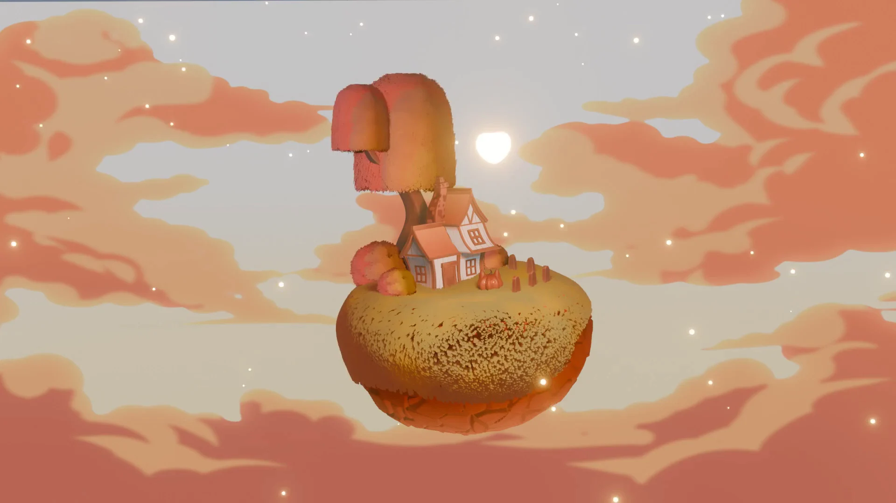
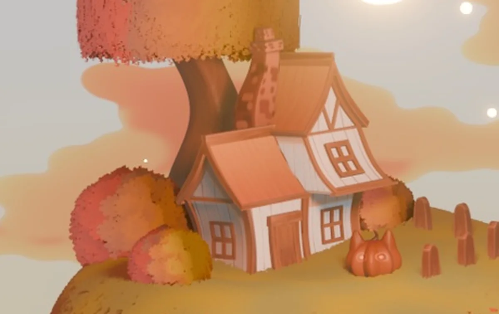

← All casesВсе кейсы
Case 07 · Diorama
Autumn Island
A floating island: a timber-frame cottage under a huge autumn tree, pumpkins, a little fence and a painted sky with drifting lights.Парящий остров: фахверковый домик под огромным осенним деревом, тыквы, заборчик и нарисованное небо с огоньками.
TaskЗадача
A small world with one clear mood.Маленький мир с одним ясным настроением.
My partМой вклад
- Cottage, tree and islandДомик, дерево и остров
- Stylized foliageСтилизованная растительность
- Short animated loopКороткая анимированная петля
DecisionsРешения
- One warm palette; white cottage walls as the eye’s resting pointОдна тёплая палитра; белые стены домика как точка отдыха для глаза
ResultРезультат
Render and a 1.7 s loop (original file, looped on this page).Рендер и петля 1,7 с (оригинальный файл, здесь зациклен).

01 · Motion
The loopПетля
Original animation file, shown as-is.Оригинальный файл анимации, без изменений.
02 · Detail
The cottageДомик
Close-up crop from the render.Крупный план из рендера.
Palette sampled from the artworkПалитра, снятая с работы
